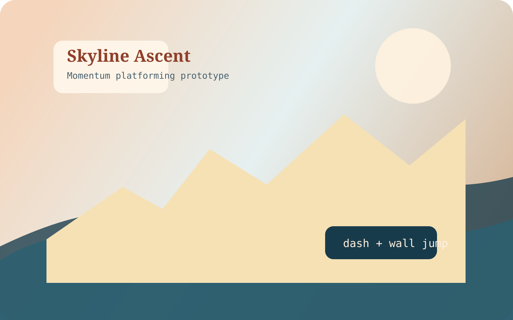
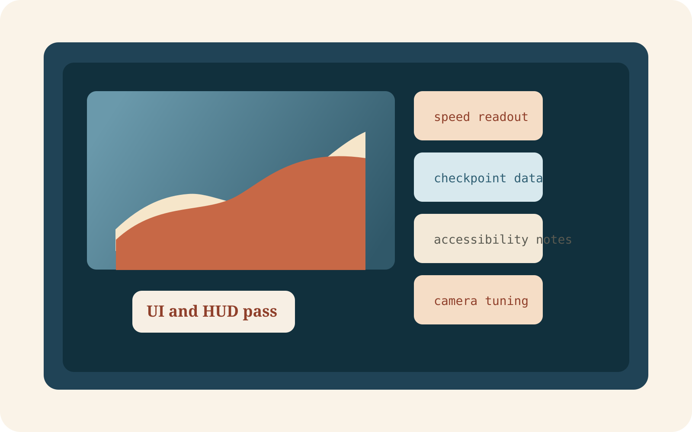

Skyline Ascent
A fast traversal prototype focused on jump buffering, air control, and strong visual readability at speed.
Use this area to describe your role, what problem you were solving, and what makes the project interesting. Recruiters and collaborators usually care about both the result and the thinking behind it.


C# movement snippet
A short sample is enough to show style and clarity.
public void QueueJump(float inputTime)
{
lastJumpPressTime = inputTime;
}
private void HandleJump()
{
bool bufferedJump = Time.time - lastJumpPressTime <= jumpBufferWindow;
bool coyoteJump = Time.time - lastGroundedTime <= coyoteTimeWindow;
if (bufferedJump && coyoteJump)
{
velocity.y = jumpForce;
lastJumpPressTime = float.NegativeInfinity;
}
}